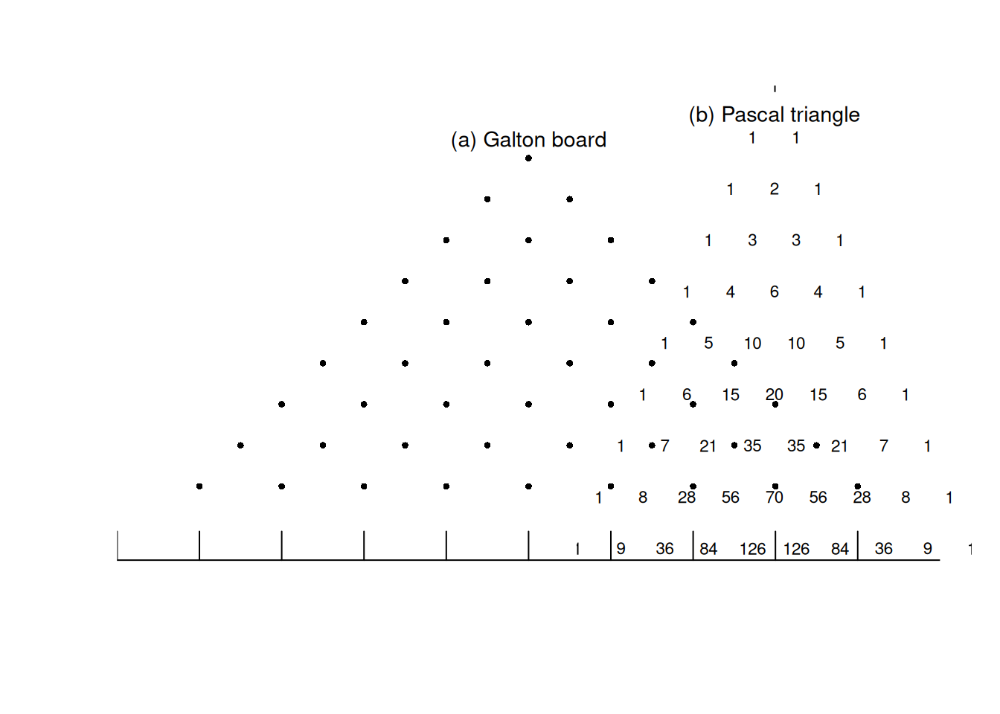
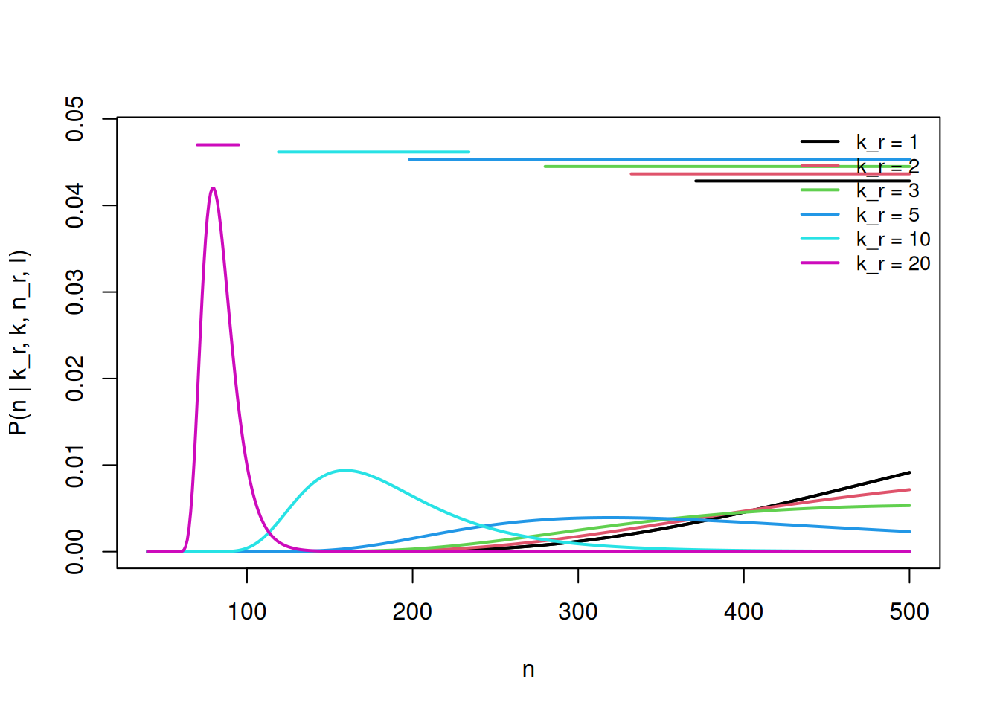
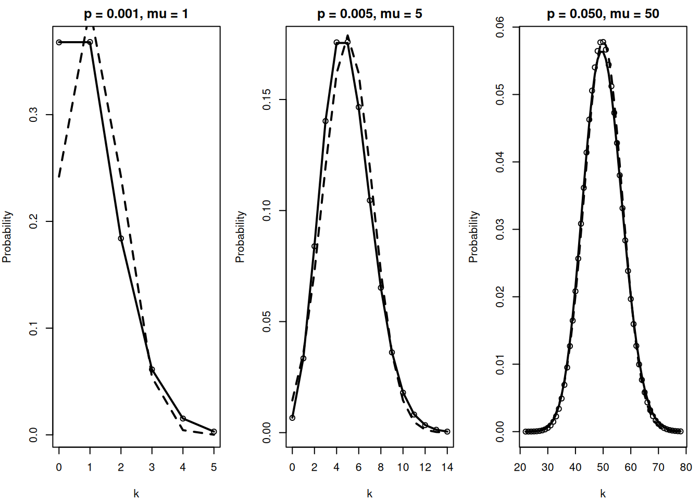

Show plot
source("plots/fig_4_1_galton_pascal.R")
Combinatorics is one of the key elements of probability theory, as well as in statistical physics. Although counting the number of elements in a set is a rather broad mathematical topic, many of the problems that arise in applications have a relatively simple combinatorial description. In the following we address the most important ones. A comprehensive treatment can be found in many textbooks, see e.g. [67, 196].
\[ \begin{equation*} N_{P}=n * m \tag{4.1} \end{equation*} \]
An example is given in Table 4.1.
Table 4.1 Pairing of the elements \(\left\{a_{1}, a_{2}\right\}\) and \(\left\{b_{1}, b_{2}, b_{3}\right\}\)
| 1 | 2 | 3 | 4 | 5 | 6 |
|---|---|---|---|---|---|
| \(\left(a_{1}, b_{1}\right)\) | \(\left(a_{1}, b_{2}\right)\) | \(\left(a_{1}, b_{3}\right)\) | \(\left(a_{2}, b_{1}\right)\) | \(\left(a_{2}, b_{2}\right)\) | \(\left(a_{2}, b_{3}\right)\) |
Proof. There are \(m\) different possibilities to select an element of type \(a\) and for each selection there are \(n\) different possibilities for an element of type \(b\). \(\square\)
Each card is defined by a unique combination of card value and suit. As there are 4 suits and 13 different values, a complete deck of cards consists of \(4 * 13=52\) playing cards.
\[ \begin{equation*} N_{M}=n_{1} * n_{2} * \cdots * n_{r}=\prod_{i=1}^{r} n_{i} . \tag{4.2} \end{equation*} \]
Table 4.2 Multiplets of the elements \(\left\{a_{1}, a_{2}\right\},\left\{b_{1}, b_{2}, b_{3}\right\}\) and \(\left\{c_{1}, c_{2}\right\}\)
| 1 | 2 | 3 | 4 | 5 | 6 |
|---|---|---|---|---|---|
| \(\left(a_{1}, b_{1}, c_{1}\right)\) | \(\left(a_{1}, b_{1}, c_{2}\right)\) | \(\left(a_{1}, b_{2}, c_{1}\right)\) | \(\left(a_{1}, b_{2}, c_{2}\right)\) | \(\left(a_{1}, b_{3}, c_{1}\right)\) | \(\left(a_{1}, b_{3}, c_{2}\right)\) |
| 7 | 8 | 9 | 10 | 11 | 12 |
| \(\left(a_{2}, b_{1}, c_{1}\right)\) | \(\left(a_{2}, b_{1}, c_{2}\right)\) | \(\left(a_{2}, b_{2}, c_{1}\right)\) | \(\left(a_{2}, b_{2}, c_{2}\right)\) | \(\left(a_{2}, b_{3}, c_{1}\right)\) | \(\left(a_{2}, b_{3}, c_{2}\right)\) |
( \(a_{j_{1}}, b_{j_{2}}, \ldots, x_{j_{r}}\) ), provided there are \(n_{1}\) elements \(a_{1}, a_{2}, \ldots, a_{n_{1}}\) of type \(a, n_{2}\) elements \(b_{1}, b_{2}, \ldots, b_{n_{2}}\) of type \(b, \ldots, n_{r}\) elements \(x_{1}, x_{2}, \ldots, x_{n_{r}}\) of type \(x\) is given by:
An example is given in Table 4.2.
Proof. For \(r=2\) the equation holds because it is identical to the previous case for pairs. For \(r=3\) we consider the \(n_{1} * n_{2}\) pairs ( \(a_{i}, b_{j}\) ) as elements \(u_{l}, l=1,2, \ldots, n_{1} * n_{2}\) of a new set. Each triplet \(\left(a_{i}, b_{j}, c_{k}\right)\) can then be considered as a pair \(\left(u_{l}, c_{k}\right)\). The number of pairs is then given by \(n_{1} * n_{2} * n_{3}\). Repetition of the argument yields the result for arbitrary \(r\). \(\square\)
to invent probability theory. In this game the bank wins if there is at least once face value ’ 6 ’ in four rolls of a die. We solve the problem for the general case that the die is rolled \(r\) times. We can identify the sides of the die with the number of boxes \(n=6\) and the number of rolls \(r\) with the number of objects. There are in total \(6^{r}\) different outcomes, out of which \(5^{r}\) do not contain the face value ’ 6 ‘. If it is a fair die then the probability for having at least once face value’ 6 ’ in \(r\) rolls is given by
\[ \begin{equation*} P_{r}=1-\left(\frac{5}{6}\right)^{r} . \tag{4.3} \end{equation*} \]
Especially for the historic game, the probability is
\[ \begin{equation*} P_{4}=\left(\frac{5}{6}\right)^{4}=0.5177 \tag{4.4} \end{equation*} \]
and therefore the chance for the bank to win is slightly greater than \(50 \%\).
Also interesting is the probability for having at least once face value ’ 6 ’ in six rolls of the die. In this case we obtain \(P_{6}=0.6651<2 / 3\). The result might seem counterintuitive at first glance. Doesn’t that imply that the other face values occur more frequently? No, because there are sequences with no face value ’ 6 ’, but there are others where it occurs more than once.
\[ P(\text { box is empty })=\left(\frac{n-1}{n}\right)^{r}=\left(1-\frac{1}{n}\right)^{r} \]
and can be approximated by
\[ P(\text { box is empty })=e^{r \ln \left(1-\frac{1}{n}\right)}=e^{-r / n+O\left(n^{-2}\right)} \approx e^{-r / n} . \]
We consider a set of \(n\) elements \(a_{1}, a_{2}, \ldots, a_{n}\), often also termed a population. From this population a sample of size \(r\) is drawn: \(a_{j_{1}}, a_{j_{2}}, \ldots, a_{j_{r}}\). Since we are interested in the order in which the elements are drawn, we call the sample an ordered sample. \({ }^{1}\) There are essentially two different possibilities:
[^0]Table 4.3 Ordered sample of size 2 drawn from the population \(\left\{a_{1}, a_{2}, a_{3}\right\}\)
| With replacement | ||||||||
|---|---|---|---|---|---|---|---|---|
| 1 | 2 | 3 | 4 | 5 | 6 | 7 | 8 | 9 |
| ( \(a_{1}, a_{1}\) ) | ( \(a_{1}, a_{2}\) ) | ( \(a_{1}, a_{3}\) ) | ( \(a_{2}, a_{1}\) ) | ( \(a_{2}, a_{2}\) ) | ( \(a_{2}, a_{3}\) ) | ( \(a_{3}, a_{1}\) ) | ( \(a_{3}, a_{2}\) ) | ( \(a_{3}, a_{3}\) ) |
| Without replacement | ||||||||
| 1 | 2 | 3 | 4 | 5 | 6 | |||
| ( \(a_{1}, a_{2}\) ) | ( \(a_{1}, a_{3}\) ) | ( \(a_{2}, a_{1}\) ) | ( \(a_{2}, a_{3}\) ) | ( \(a_{3}, a_{1}\) ) | ( \(a_{3}, a_{2}\) ) |
In Table 4.3, ordered samples are illustrated in terms of a population of three elements from which two are drawn with and without replacement respectively. In the case of sampling with replacement, the number of different samples can be calculated very easily, since for each draw there are \(n\) choices, resulting in \(n^{r}\) possibilities.
Without replacement there are \(n\) different options for the first draw, then \(n-1\) (because one element of the population is already missing) and so on, up to the \(r\) th draw for which only \(n-r+1\) options remain. The total number of possibilities is
\[ n(n-1)(n-2) \cdots(n-r+1)=\frac{n!}{(n-r)!} . \]
In summary, we have
\[ \begin{array}{lr} N_{\mathrm{op}}^{\mathrm{mz}}=n^{r} & \text { with replacement } \\ N_{\mathrm{op}}^{\mathrm{oz}}=\frac{n!}{(n-r)!} & \text { without replacement } \tag{4.5b} \end{array} \]
An example is given in Table 4.3. A special case of a sample without replacement is given by \(r=n\). In this case the sample is also a possible arrangement (permutation) of the elements of the population, implying that
\[ \begin{equation*} N_{\text {perm }}=n!. \tag{4.6} \end{equation*} \]
Table 4.4 Permutations of the elements of the population \(\left\{a_{1}, a_{2}, a_{3}\right\}\)
| 1 | 2 | 3 | 4 | 5 | 6 |
|---|---|---|---|---|---|
| \(\left(a_{1}, a_{2}, a_{3}\right)\) | \(\left(a_{2}, a_{3}, a_{1}\right)\) | \(\left(a_{3}, a_{1}, a_{2}\right)\) | \(\left(a_{3}, a_{2}, a_{1}\right)\) | \(\left(a_{2}, a_{1}, a_{3}\right)\) | \(\left(a_{1}, a_{3}, a_{2}\right)\) |
See Table 4.4.
Suppose that we take a sample of size \(r\) with replacement from a population of size \(n\). What is the probability that no element of the sample has been drawn twice or more? The total number of possible outcomes is given by the number of ordered samples with replacement, equation (4.5a), as \(n^{r}\). The number of favourable events, where no element occurs twice, is equivalent to the number of ordered samples without replacement, given in equation (4.5b). Then the sought-for probability is
\[ \begin{equation*} P=\frac{n!}{(n-r)!}\left(\frac{1}{n}\right)^{r} . \tag{4.7} \end{equation*} \]
There are various interesting applications of this result.
Digit distributions are frequently used to detect taxpayers’ noncompliance and credit card frauds, etc. [44]. Typically, the first digits are analysed, which are supposed to have a logarithmic distribution (Benford’s law) [83]. The last digits, in contrast, are assumed to be uniformly distributed [44]. Let us assume the last digits in a large collection of numbers with many digits are really uniformly distributed, then the preceding result provides a simple (although incomplete) screening procedure. Picking the last 5 digits corresponds to a sample of size \(r=5\) of a population with \(n=10\) elements (the digits \(0,1, \ldots, 9\) ). For this setting equation (4.7) yields a probability \(P=\frac{10!}{5!} 10^{-5}=\) 0.3024 that no digit occurs twice in a block of 5 digits. We perform repeated experiments based on 100 numbers with 16 digits and count how often the last 5 digits contain no duplicates. The analysis yields the sequence \(30,27,30,34,26,32,37,36,26,31,36,32\). The sample mean is 0.31 , in surprising agreement with the preceding result. However, this is just a ‘forward’ calculation and it would be premature to jump to any conclusions. For this purpose we would need a thorough hypothesis test.
What is the probability for obtaining each element of a population once in a sample that has the size of the population when drawn with replacement? More concretely, what is the probability for getting each face value \(1-6\) when the die is rolled 6 times? In other words, we are interested in the probability that no duplicates occur in a sample of size \(n\) drawn with replacement from a population of size \(n\). The result is given by equation (4.7) with \(r=n\), i.e. \(P=n!/ n^{n}\). This implies that the probability for obtaining all 6 numbers when rolling a die 6 times is only \(P=0.015\). Therefore, although the probability for obtaining each number is equal, a uniform frequency of the values is highly unlikely.
Table 4.5 Subpopulations of size 2 of the population \(\left\{a_{1}, a_{2}, a_{3}\right\}\)
| 1 | 2 | 3 |
|---|---|---|
| \(\left(a_{1}, a_{2}\right)\) | \(\left(a_{1}, a_{3}\right)\) | \(\left(a_{2}, a_{3}\right)\) |
As before, we consider populations of size \(n\). Two populations are said to be different if there is at least one element in one population which is not present in the other. The number of different subpopulations of size \(r\), with \(r \leq n\), of a population of size \(n\) is given by:
\[ \begin{array}{rlr} N^{\mathrm{nr}} & =\binom{n}{r}=\frac{n!}{r!(n-r)!} & \text { without replacement, } \\ N^{\mathrm{r}} & =\binom{n+r-1}{r} & \text { with replacement. } \tag{4.8b} \end{array} \]
The proof of equation (4.8b) is postponed to Section 4.3 .1 [p. 59 ]. The proof of equation (4.8a) follows from the number of ordered samples without replacement of size \(r\) from populations of size \(n\) (equation (4.5b)), which is \(N_{\mathrm{op}}^{\mathrm{oz}}=\frac{n!}{(n-r)!}\). However, since we are no longer interested in a specific order, each subpopulation is counted \(r\) ! times, according to the different permutations that are considered different in an ordered sample. Then we find equation (4.8a) immediately. Expressed differently, there are \(\binom{n}{r}\) different subsets of size \(r\) of a set of size \(n\). A simple example is given in Table 4.5.
\[ \begin{equation*} \binom{n}{r}:=\frac{n!}{r!(n-r)!} \tag{4.9} \end{equation*} \]
is termed a binomial coefficient.
There are as many subpopulations of size \(r\) as there are of size \(n-r\), because for each subpopulation of size \(r\) the remaining elements of the population form a subpopulation of size \(n-r\), hence the binomial coefficients have the property
\[ \binom{n}{r}=\binom{n}{n-r} . \]
It is expedient to define
\[ \binom{n}{0}=1, \quad 0!=1 \quad \text { and } \quad\binom{n}{r}=0 \text { for } r>n . \]
Binomial coefficients occur in very many applications. One particularly important application is the computation of combinations. \(C_{r}^{N}\) is also called the ‘number of \(r\)-combinations’ from a population of size \(N\), which is commonly denoted by \(C_{r}^{N}\) :
\[ \begin{equation*} C_{r}^{N}:=\binom{N}{r} . \tag{4.10} \end{equation*} \]
Suppose there are \(N\) basis functions and \(n_{\uparrow}\) electrons with spin up. The number of ways to allocate the up-electrons to the basis functions is
\[ N_{\text {many-body basis }}=\binom{N}{n_{\uparrow}} \]
This can easily be seen by identifying the distinguishable basis functions as the elements of the population, and the subpopulation of size \(n_{\uparrow}\) contains those functions that are occupied by the electrons. Since electrons are indistinguishable, the order does not matter. If, in addition, there are \(n_{\downarrow}\) electrons with spin down, then the size of the many-body Hilbert space of the particle sector specified by ( \(n_{\uparrow}, n_{\downarrow}\) ) is
\[ N_{\mathrm{HS}}=\binom{N}{n_{\uparrow}}\binom{N}{n_{\downarrow}} . \]
This number increases rapidly with the number of basis functions \(N\). For example, for \(N=16\) and \(n_{\uparrow}=n_{\downarrow}=8\), what is called half-filling, the Hilbert space is already \(N_{\mathrm{HS}}= 1.7 \times 10^{8}\), which shows that quantum-mechanical strongly correlated many-body problems are a real challenge. In this book we will have ample opportunity to see further applications of the binomial coefficient in combinatorial problems.
Another occurrence is:
\[ \begin{equation*} (a+b)^{n}=\sum_{r=0}^{n}\binom{n}{r} a^{r} b^{n-r} \tag{4.11} \end{equation*} \]
Proof. Explicit multiplication of the left-hand side of equation (4.11) results in sums of products of the factors \(a\) and \(b\) in all possible sequences with a total of \(n\) factors, e.g.
\[ \underbrace{a a b a b b b a b \ldots a}_{n \text { factors }} . \]
For a given number of elements of type \(a\), resulting in \(a^{r} b^{n-r}\), there are \(\binom{n}{r}\) different sequences of \(a\) s and \(b s\). \(\square\)
Another important application of the binomial coefficient is the binomial distribution. Suppose we perform a random experiment with a binary outcome, e.g. red/blue balls, head/tail, defect/working, etc., which is called a Bernoulli trial. Independent repetition of such binary experiments is a Bernoulli process. The probability for the first outcome (red/head/defect) shall be \(p\), then the probability for the alternative outcome is \(q=1-p\). The probability for observing a specific sequence of \(r\) times the first outcome in a sample of size \(n\) is given by \(p^{r} q^{n-r}\). If the order is immaterial, then - since there are \(\binom{n}{r}\) possible arrangements we obtain
\[ \begin{align*} P_{B}(r \mid n, p) & =\binom{n}{r} p^{r}(1-p)^{n-r}, \tag{4.12a}\\ \langle r\rangle & =n p, \tag{4.12b}\\ \operatorname{var}(r) & =n p(1-p) \tag{4.12c} \end{align*} \]
We can verify the correct normalization of the binomial distribution exploiting the binomial theorem in equation (4.11) and \(p+q=1\) :
\[ \sum_{r=0}^{n}\binom{n}{r} p^{r} q^{n-r}=(p+q)^{n}=1 \]
Proof of the mean:
\[ \langle r\rangle=\sum_{r=0}^{n} r\binom{n}{r} p^{r}(1-p)^{n-r}=\sum_{r=0}^{n} r \frac{n!}{r!(n-r)!} p^{r}(1-p)^{n-r} \]
\[ \begin{aligned} & =\sum_{r=1}^{n} n \frac{(n-1)!}{(r-1)!((n-1)-(r-1))!} p p^{r-1}(1-p)^{(n-1)-(r-1)} \\ & =n p \underbrace{\sum_{k=0}^{n-1}\binom{n-1}{k} p^{k}(1-p)^{(n-1)-k}}_{=1}=n p . \end{aligned} \]
This elementary proof was a bit tedious. For the computation of the variance or even more complex expressions we need a better approach. Let us take a second glance at the computation of the mean:
\[ \begin{equation*} \langle r\rangle=\sum_{r=0}^{n}\binom{n}{r} r p^{r}(1-p)^{n-r} . \tag{4.13} \end{equation*} \]
Here the term \(r p^{r}\) can also be written as
\[\begin{equation*} r p^{r}=p \frac{\partial}{\partial p} p^{r} \tag{4.14} \end{equation*}\]
In order to be able to pull the operator \(p \frac{\partial}{\partial p}\) out of the sum, we introduce temporarily a new independent variable \(q=(1-p)\). Then
\[ \langle r\rangle=\left.p \frac{\partial}{\partial p} \sum_{r=0}^{n}\binom{n}{r} p^{r} q^{n-r}\right|_{q=1-p} \]
It is important to insert \(q=1-p\) only after the derivative has been performed, otherwise we would get an additional term that is not present in equation (4.13). The remaining step is simply the derivative of the binomial theorem:
\[ \langle r\rangle=\left.p \frac{\partial}{\partial p}(p+q)^{n}\right|_{q=1-p}=\left.p n(p+q)\right|_{q=1-p}=p n . \] \(\square\)
Proof of the variance: Now we apply this tool to the computation of the variance
\[ \begin{aligned} \left\langle r^{2}\right\rangle & =\sum_{r=0}^{n} r^{2}\binom{n}{r} p^{r}(1-p)^{n-r}=\left.\left(p \frac{\partial}{\partial p}\right)\left(p \frac{\partial}{\partial p}\right) \sum_{r=0}^{n}\binom{n}{r} p^{r} q^{n-r}\right|_{q=1-p} \\ & =\left.\left(p \frac{\partial}{\partial p}\right)\left(p \frac{\partial}{\partial p}\right)(p+q)^{n}\right|_{q=1-p}=\left.n p \frac{\partial}{\partial p} p(p+q)^{n-1}\right|_{q=1-p} \\ & =\left.n p\left[(p+q)^{n-1}+(n-1) p(p+q)^{n-2}\right]\right|_{q=1-p} \\ & =n p[1-p+n p]=n p(1-p)+\langle r\rangle^{2} . \end{aligned} \] \(\square\)
In case of more than two alternative outcomes in a single trial, the binomial coefficient can be generalized to the multinomial coefficient. Suppose there are integer numbers \(n_{1}, n_{2}, \ldots, n_{k}\) which add up to \(N\). The number of possible partitionings of a population of size \(N\) into \(k\) subpopulations of size \(n_{i}\), with \(i=1, \ldots, k\) such that \(\sum_{i=1}^{k} n_{i}=N\), is given by
Multinomial coefficients
\[ \begin{equation*} N(\boldsymbol{n} \mid \boldsymbol{n}, k)=\binom{\boldsymbol{n}}{\boldsymbol{n}}=\frac{N!}{\prod_{i=1}^{k} n_{i}!} . \tag{4.15} \end{equation*} \]
Proof: We generate all possible subpopulations in the following way. We align the elements of the original population in a row and assign the first \(n_{1}\) elements to subpopulation 1 , the next \(n_{2}\) elements to subpopulation 2 , and so on up to the last \(n_{k}\) elements, which are assigned to subpopulation \(k\). In total there are \(n!\) different permutations of the population and hence \(n!\) different assignments to the subpopulations. But permutations of the elements within a subgroup are immaterial. Therefore, the \(n!\) permutations overcount the contribution of each subpopulation by a factor of \(n_{\alpha}!(\alpha=1,2, \ldots, k)\). This is accounted for by the denominator in equation (4.15). \(\square\)
The binomial coefficients are a special case of the multinomial coefficients for \(k=2\), \(N(r \mid n)=N(\{r, n-r\} \mid n, 2)\).
The generalization of the binomial theorem yields the multinomial theorem:
Multinomial theorem
\[ \begin{equation*} \left(a_{1}+a_{2}+\cdots+a_{k}\right)^{n}=\widetilde{\sum_{n_{1}, n_{2}, \ldots, n_{k}=0}^{n}}\binom{n}{n} a_{1}^{n_{1}} a_{2}^{n_{2}} \ldots a_{k}^{n_{k}} . \tag{4.16} \end{equation*} \]
The tilde indicates that the summation runs only over those numbers \(\boldsymbol{n}\) which add up to \(\boldsymbol{n}\). The proof is along the same lines as that of the binomial theorem, and we leave it as an exercise for the reader.
Next we generalize the binomial distribution to the multinomial case. The multinomial distribution provides the probability to find \(n_{\alpha}\) objects of \(n\) in box \(\alpha\), if \(p_{\alpha}\) is the probability to find an object in box \(\alpha\) in a single trial.
Multinomial distribution
\[ \begin{align*} P(\boldsymbol{n} \mid \boldsymbol{n}, k) & =\binom{\boldsymbol{n}}{\boldsymbol{n}} \prod_{i=1}^{k} p_{i}^{n_{i}} \tag{4.17a}\\ \left\langle n_{i}\right\rangle & =n p_{i} \tag{4.17b}\\ \operatorname{var}\left(n_{i}\right) & =n p_{i}\left(1-p_{i}\right) \tag{4.17c}\\ \text { for } i \neq j: \operatorname{cov}\left(n_{i}, n_{j}\right) & =n p_{i}\left(1-p_{j}\right) \tag{4.17~d} \end{align*} \]
The normalization of the multinomial distribution follows immediately from equation (4.16). The result for mean and variance of the occupation \(n_{i}\) of box \(i\) can be understood very easily by combining all the other boxes to a single one. Then we are back to the binomial situation. The new element is the covariance \(\operatorname{cov}\left(n_{i}, n_{j}\right)\) for \(i \neq j\). Prooffor covariance: The computation of \(\left\langle n_{i} n_{j}\right\rangle\) can be performed based on equation (4.14), assuming temporarily that the \(p_{j}\) are independent variables. After all derivatives are performed, we use \(\sum_{j} p_{j}=1\), then:
\[ \begin{aligned} \left\langle n_{i} n_{j}\right\rangle & =\sum_{n_{1}, n_{2}, \ldots, n_{k}=0}^{n} n_{i} n_{j}\binom{n}{\boldsymbol{n}} \prod_{l=1}^{k} p_{l}^{n_{l}} \\ & =\left.p_{i} \frac{\partial}{\partial p_{i}} p_{j} \frac{\partial}{\partial p_{j}}\left(p_{1}+p_{2}+\cdots+p_{k}\right)^{n}\right|_{\sum_{j} p_{j}=1} \\ & =n(n-1) p_{i} p_{j}=\left\langle n_{i}\right\rangle\left\langle n_{j}\right\rangle-n p_{i} p_{j} \end{aligned} \] \(\square\)
The Galton board consists of nails in ordered positions, as visualized in Figure 4.1. Balls are dropped from the top, and bounce left and right with equal probability as they hit the nails. Eventually, they are collected in the trays at the bottom. We are interested in the distribution of the balls in the collecting trays. Initially, the ball is at position \(x=0\). After the first bounce, the ball is equally likely to be at \(x= \pm 1\). Later on, at step \(i\), the ball will be at position \(x_{i}\) and will alter its position by \(\Delta x= \pm 1\). Therefore, it is identical to a repeated trial where one of the events ( \(\Delta x= \pm 1\) ) is happening with the same probability.
Suppose that after \(n\) repetitions the event \(\Delta x=+1\) has happened \(k\) times (which implies that event \(\Delta x=-1\) has happened \(n-k\) times), then the location of the ball is
\[ x_{n}(k)=(+1) \cdot k+(-1) \cdot(n-k)=2 k-n . \]
source("plots/fig_4_1_galton_pascal.R")
Figure 4.1 (a) Galton’s board, (b) Pascal’s triangle.
In the following we will assume that probability \(p\) for a right move and \(q=1-p\) for a left move can be different. Therefore, the probability for the ball to be at location \(x_{n}(k)\) is equal to the probability for \(k=\left(x_{n}(k)+n\right) / 2\) bounces to the right, i.e.
\[ \begin{equation*} P\left(x_{n} \mid n, p\right)=\left.\binom{n}{k} p^{k} q^{n-k}\right|_{k=\frac{x_{n}+n}{2}} . \tag{4.18} \end{equation*} \]
Please note that both \(n\) and \(x_{n}(k)\) have to be either even or odd. The binomial coefficient \(\binom{n}{k}\) denotes the number of different paths resulting in a displacement of \(i=x_{n}(k)\) in the \(n\)th step. To reach position \(i\) in the \(n\)th step requires the ball to be at position \(i-1\) or \(i+1\) in the previous step. The total number of possibilities, \(N_{i, n}\), to be at position \(i\) in \(n\) steps is therefore given by
\[ N_{i, n}=N_{i-1, n-1}+N_{i+1, n-1} . \]
Of course, there is no contribution from outside the edge, i.e.
\[ N_{i, n}=0 \quad \text { for }|i|>n . \]
So we can successively generate all values \(N_{i, n}\) by starting with the uppermost pin ( \(N_{0,0}=1\) ). We obtain the binomial coefficients displayed in Figure 4.1(b), which is also known as Pascal’s triangle. The distribution of balls in the \(n\)th row is therefore given by the binomial coefficients.
Next we want to modify the process such that we can describe ‘Brownian motion’. The ball turns into a particle, which is allowed to rest between decisions. In other words for each iteration step, corresponding to a time step \(\Delta t\), there are three possibilities: right move with probability \(p_{1}\), left move with probability \(p_{2}\), and no move with probability \(p_{3}\).
The position after \(N\) time steps is given by \(x=n_{1}-n_{2}\), where \(n_{1}\left(n_{2}\right)\) is the number of steps taken to the right (left). The mean position is then
\[ \langle x\rangle=\left\langle n_{1}\right\rangle-\left\langle n_{2}\right\rangle \stackrel{(4.17 \mathrm{~b})}{=} N\left(p_{1}-p_{2}\right) . \]
Clearly, for small \(\Delta t\) the probability that the particle hops is proportional to \(\Delta t\). We define \(p_{1}-p_{2}=\Delta t v_{d}\), with \(v_{d}\) being the ‘drift velocity’. Then
\[ \langle x\rangle=v_{d} N \Delta t=v_{d} t, \]
where \(t\) is the total time elapsed in \(N\) iterations. Next we compute the variance of \(x\) :
\[ \left\langle x^{2}\right\rangle=\left\langle n_{1}^{2}\right\rangle+\left\langle n_{2}^{2}\right\rangle-\left\langle n_{1} n_{2}\right\rangle . \]
We introduce \(n_{\alpha}=\left\langle n_{\alpha}\right\rangle+\Delta n_{\alpha}\) and find, along with equations (4.17c) and (4.17d),
\[ \begin{aligned} \left\langle x^{2}\right\rangle & =\left\langle\left(\Delta n_{1}\right)^{2}\right\rangle+\left\langle\left(\Delta n_{2}\right)^{2}\right\rangle-2\left\langle\Delta n_{1} \Delta n_{2}\right\rangle+\left\langle n_{1}\right\rangle^{2}+\left\langle n_{2}\right\rangle^{2}-2\left\langle n_{1}\right\rangle\left\langle n_{2}\right\rangle \\ & =N\left(p_{1}\left(1-p_{1}\right)+p_{2}\left(1-p_{2}\right)+2 p_{1} p_{2}\right)+\langle x\rangle^{2} \end{aligned} \]
That leads to
\[ \left\langle(\Delta x)^{2}\right\rangle=N\left[\left(p_{1}+p_{2}\right)-\left(p_{1}-p_{2}\right)^{2}\right] . \]
The second contribution in the square bracket vanishes in the limit \(\Delta t \rightarrow 0\) as it is proportional to \(\Delta t^{2}\). The first term contains the probability that the particle hops at all in \(\Delta t\), which is \(p_{1}+p_{2}:=\Delta t D\). The proportionality constant \(D\) is the ‘diffusion coefficient’. The variance is therefore
\[ \left\langle(\Delta x)^{2}\right\rangle=D t . \]
As is usual for diffusion, the width increases as \(\sqrt{t}\).
In many applications one has to count the possibilities to distribute objects among boxes under some (problem-specific) constraints. This situation is typical for quantum particles, but it is also common in the statistical analysis of star populations, traffic accidents, and many more. We introduce the \(k\)-tuples of occupation numbers \(\boldsymbol{n}=\left\{n_{1}, n_{2}, \ldots, n_{k}\right\}\), where \(n_{i}\) denotes how many objects are in box \(i\). The total number of particles is fixed:
\[ \begin{equation*} \sum_{i} n_{i}=N . \tag{4.19} \end{equation*} \]
Two distributions differ only if the \(k\)-tuples \(n\) of the occupation numbers are different. The number of distinct distributions of \(N\) objects in \(k\) boxes is given by
\[ \begin{equation*} A_{N, k}=\binom{N+k-1}{N}=\binom{N+k-1}{k-1} . \tag{4.20} \end{equation*} \]
Proof: We represent the objects by open circles \(\bigcirc\) and the walls between the boxes by vertical bars \(\mid\). For example, the distribution of \(N=10\) objects in \(k=5\) boxes with occupation-tuple \(=\{3,0,2,1,4\}\) is represented by
\[ [\circ \circ \circ|\quad| \circ \circ|\circ| \circ \circ \circ \circ] . \]
The outer walls are depicted by ‘[’ and ’]’. We can uniquely generate all possible occupation number distributions ( \(k\)-tuples) by creating all combinations of the \(N\) circles and the \(k-1\) inner walls. In total there are \(N+k-1\) positions which are occupied by either one of the circles or one of the vertical bars. Consequently, according to equation (4.10) [p. 53], the number of combinations is given by equation (4.20). \(\square\)
With equation (4.20) we can also prove equation (4.8b) [p. 52] in a straightforward manner.
Proof: The selection of a subpopulation of size \(r\) from a population of size \(n\) with replacement is equivalent to a distribution of \(r\) objects in \(n\) boxes, where the occupation number \(n_{j}\) specifies how often the element \(j\) of the population occurs in the subpopulation. Using equation (4.20), we immediately get equation (4.8b) [p.52]. \(\square\)
Next we want to assign probabilities to the occupation number distributions \(n\). We start out with classical distinguishable particles. We consider \(N\) particles, which shall be distributed among \(k\) boxes. If the particles are distinguishable, the situation is that of forming \(k\) subpopulations of a population of size \(N\) without replacement, as described in equation (4.15). We assume equal prior probability \(p_{j}=1 / k\) for each box. Then the probability for the occupation numbers \(\boldsymbol{n}\) is given by the multinomial distribution equation (4.17a), with \(p_{j}=1 / k\). That leads to:
\[ \begin{equation*} \boldsymbol{P}_{B}(\boldsymbol{n} \mid N, k)=\binom{N}{\boldsymbol{n}} k^{-N} \tag{4.21} \end{equation*} \]
Classical statistical physics is based on this distribution. It did come as a big surprise in the early twentieth century that identical particles like electrons or photons did not obey this
Table 4.6 Comparison of different particle statistics (classical, bosonic, fermionic). The symbols \(a\) and \(b\) stand for distinguishable and \(x\) for indistinguishable particles | Classical particles | | | | | | | | | | | :— | :— | :— | :— | :— | :— | :— | :— | :— | :— | | | 1 | 2 | 3 | 4 | 5 | 6 | 7 | 8 | 9 | | \(s_{1}\) | \(a, b\) | - | - | \(a\) | \(b\) | \(a\) | \(b\) | - | - | | \(s_{2}\) | - | \(a, b\) | - | b | \(a\) | - | - | a | \(b\) | | \(s_{3}\) | - | - | \(a, b\) | - | - | \(b\) | \(a\) | \(b\) | \(a\) | | Bosons | | | | | | | | | | | | 1 | 2 | 3 | 4 | 5 | 6 | | | | | \(s_{1}\) | \(x, x\) | - | - | \(x\) | \(x\) | - | | | | | \(s_{2}\) | - | \(\boldsymbol{x} \boldsymbol{,} \boldsymbol{x}\) | - | \(x\) | - | \(x\) | | | | | \(\underline{s_{3}}\) | - | - | \(x, x\) | - | \(x\) | \(x\) | | | | | Fermions | | | | | | | | | | | | 1 | 2 | 3 | | | | | | | | \(s_{1}\) | \(x\) | \(x\) | - | | | | | | | | \(s_{2}\) | \(x\) | - | \(x\) | | | | | | | | \(\boldsymbol{s}_{\mathbf{3}}\) | - | \(x\) | \(x\) | | | | | | |
seemingly ‘obvious’ distribution. It turned out that quantum particles differ in a fundamental way. Classical particles, even if they are identical in all features like size, mass, charge, etc., are still distinguishable. Identical quantum particles, on the contrary, are strictly indistinguishable. They lose their identity as soon as there is more than one of them in the system. Quantum physics then tells us that there are two types of particle statistics, bosonic and fermionic. In the case of bosons, there can still be any number of them in a specific quantum state, while the indistinguishability in the case of fermions entails that there are never two or more of them in the same state, what is also referred to as the ‘Pauli principle’. The consequences are illustrated in Table 4.6. There are three states/boxes denoted by \(s_{1}, s_{2}, s_{3}\) and two particles. In the classical case they are distinguishable and hence denoted by different symbols \(a\) and \(b\), respectively. In the quantum case identical particles are indistinguishable and they are therefore denoted by the same symbol \(x\). In the classical case there are nine different distributions for the two particles in the three states. The configurations (4) and (5) differ by the individual particles that occupy \(s_{1}\) and \(s_{2}\). Such a distinction is not possible for quantum particles. These two configurations correspond to a single configuration (4) in the bosonic case. Similarly for the classical configurations (6), (7) and (8), (9). They are mapped onto (5) and (6) in the bosonic case. Apparently, for bosons all that matters are the occupation numbers. Consequently the number of configurations to distribute \(N\) bosons in \(k\) states is given by \(A_{N, k}\) (equation (4.20)). Each configuration is equally likely, so the probability for one configuration is simply \(1 / A_{N, k}\).
When it comes to fermions, the bosonic configurations (1)-(3) are forbidden by the ‘Pauli principle’, which leaves only three possible configurations for fermions. Distributing \(N\) fermions in \(k\) boxes results in \(N\) singly occupied boxes and \(N-k\) empty boxes. Consequently, there are \(\binom{k}{N}\) different fermionic configurations, which again are all equally likely. The probability for an allowed configuration is therefore \(P=1 /\binom{k}{N}\). In summary, the probabilities are
\[ \begin{align*} P & =\binom{N}{\boldsymbol{n}} k^{-N} & & (\text { classical particles }) \\ P & =\frac{N!(k-1)!}{(N+k-1)!} & & (\text { bosons }) \tag{4.22}\\ P & =\frac{N!(k-N)!}{k!} & & (\text { fermions }) \end{align*} \]
with the restriction \(n_{\alpha} \in\{0,1\}\) in the fermionic case. This shall be illustrated with a worked example. Suppose there are two dice, where the values are interpreted as boxes and the dice as particles, i.e. \(N=2, k=6\). What is the probability \(P_{7}\) for having a total face value of 7 when both dice are rolled? For classical dice this is the case for the face values \((1,6),(6,1),(2,5),(5,2),(3,4),(4,3)\). The occupation-tuples for e.g. \((1,6)\) and \((6,1)\) are given by \(\{1,0,0,0,0,1\}\). The numerical results are
\[ \begin{array}{lll} P_{7}=\frac{2!6^{-2}}{1!0!0!0!0!1!}+\frac{2!6^{-2}}{0!1!0!0!1!0!}+\frac{2!6^{-2}}{0!0!1!1!0!0!} & =\frac{1}{6} & \text { (classical) } \\ P_{7}=3 \frac{2!5!}{7!}=\frac{3 * 2}{6 * 7} & =\frac{1}{7} & \text { (bosonic) } \\ P_{7}=3 \frac{2!4!}{6!}=\frac{2 * 3}{5 * 6} & =\frac{1}{5} & \text { (fermions) } \end{array} \]
This example illustrates nicely the problems underlying the assumption of equal probability for elementary events.
Suppose, similar to the situation of Bernoulli experiments, that we have a population of size \(n\) which is composed of two different subpopulations, e.g. red and black balls of size \(n_{I}\) and \(n_{I I}=n-n_{I}\), respectively. Widespread tasks are:
HG1. Objects are drawn sequentially (with or without replacement). Find the probability that the first object of type II occurs in the \(k\) th draw. HG2. A sample of size \(k\) is drawn. Find the probability that it has \(k_{I}\) objects of the first type and \(k_{I I}=k-k_{I}\) objects of the second type.
We begin with HG1 without replacement. Then, the number of events of interest is given by the number of ordered samples without replacement of size \(k-1\) from the population of type I and size \(n_{I}\). According to equation (4.5b) [p. 50], this number is \(\frac{n_{I}!}{\left(n_{I}-(k-1)\right)!}\). In addition, the \(k\) th draw has to be of type II. This can happen in \(n_{I I}\) different ways. This has to be related to the total number of all possible events, given by the number of ordered samples without replacement of size \(k\) from a population of size \(n\), i.e. by \(\frac{n!}{(n-k)!}\). Then we find
\[ \begin{equation*} \frac{n_{I}!(n-k)!n_{I I}}{n!\left(n_{I}-(k-1)\right)!}=\frac{\binom{n_{I}}{k-1} n_{I I}}{\binom{n}{k} k} . \tag{4.23} \end{equation*} \]
Next we turn to HG1 with replacement. The calculation is quite similar to the preceding case. Only the expression for the number of ordered samples without replacement (equation (4.5b) [p. 50]) has to be replaced by that for sampling with replacement (equation (4.5a) [p. 50]) and the total number of all possible events is now given by \(n^{k}\). With \(p_{I}=\frac{n_{I}}{n}\) and \(p_{I I}=\frac{n_{I I}}{n}\) this results in
\[ \begin{equation*} \frac{n_{I}^{k-1} n_{I I}}{n^{k}}=\left(\frac{n_{I}}{n}\right)^{k-1} \frac{n_{I I}}{n}=p_{I}^{k-1} p_{I I} . \tag{4.24} \end{equation*} \]
An alternative derivation of this result is given by the following observation: The probability to draw \(k_{I}=k-1\) consecutive times objects of type I is given by \(p_{I}^{k-1}\). The probability for a subsequent draw of an object of type II is \(p_{I I}=1-p_{I}\). The result is the so-called
\[ \begin{align*} P\left(k_{I} \mid p_{I}\right) & =p_{I}^{k_{I}}\left(1-p_{I}\right) \tag{4.25a}\\ \left\langle k_{I}\right\rangle & =\frac{p_{I}}{1-p_{I}} \tag{4.25b}\\ \operatorname{var}\left(k_{I}\right) & =\frac{p_{I}}{\left(1-p_{I}\right)^{2}} \tag{4.25c} \end{align*} \]
The proper normalization of the geometric distribution can be verified using the geometric series \(\sum_{k=0}^{\infty} p^{k}=1 /(1-p)\). The relation for the mean is derived as follows:
\[ \begin{aligned} \left\langle k_{I}\right\rangle & =\left(1-p_{I}\right) \sum_{k=0}^{\infty} k p_{I}^{k}=\left(1-p_{I}\right) p_{I} \frac{d}{d p_{I}} \sum_{k=0}^{\infty} p_{I}^{k} \\ & =\left(1-p_{I}\right) p_{I} \frac{d}{d p_{I}}\left(1-p_{I}\right)^{-1}=\frac{p_{I}}{1-p_{I}} \end{aligned} \]
Similarly for the variance:
\[ \begin{aligned} \left\langle k_{I}^{2}\right\rangle & =\left(1-p_{I}\right) p \frac{d}{d p_{I}} p_{I} \frac{d}{d p_{I}}\left(1-p_{I}\right)^{-1}=\frac{p_{I}+p_{I}^{2}}{\left(1-p_{I}\right)^{2}} \\ \Rightarrow \quad \operatorname{var}\left(k_{I}\right) & =\frac{p_{I}}{\left(1-p_{I}\right)^{2}} . \end{aligned} \]
Now we address the task HG2 in Section 4.4 without replacement. That is, we are interested in the probability for a sample of size \(k\) with \(k_{I}\) objects of type I and \(k_{I I}=k-k_{I}\) objects of type II, with \(k_{I} \in\left[0, \min \left(n_{I}, k\right)\right]\). The number of possibilities of drawing \(k_{\alpha}\) objects of type \(\alpha\) is given by \(\binom{n_{\alpha}}{k_{\alpha}}\). The total number of all possible samples of size \(k\) is given by \(\binom{n}{k}\). Forming the ratio we find:
Hypergeometric distribution
\[ \left(k=k_{i}+k_{I I}, n=n_{I}+n_{I I}\right) \]
\[ \begin{align*} P\left(k_{I} \mid k, n_{I}, n_{I I}\right) & =\frac{\binom{n_{I}}{k_{I}}\binom{n_{I I}}{k_{I I}}}{\binom{n_{I}+n_{I I}}{k_{I}+k_{I I}}}, \tag{4.26a}\\ \left\langle k_{I}\right\rangle & =n_{I} \frac{k}{n}, \tag{4.26b}\\ \operatorname{var}\left(k_{I}\right) & =\frac{k(n-k) n_{I} n_{I I}}{(n-1) n^{2}} . \tag{4.26c} \end{align*} \]
The normalization is proved in Appendix equation (A.30) [p. 608]. The derivation of the mean and variance is outlined in Appendix equation (A.32) [p. 609] and Appendix equation (A.34) [p. 610], respectively.
The hypergeometric distribution is of importance in mark-recapture techniques for population estimation, which are used in ecology to estimate population sizes of animals or in epidemiology to track the spread of diseases. For concreteness, let us consider the following example. Assume that the total number of fish in a lake is \(n\). Of these, \(n_{r}\) fishes are caught, tagged with a red dot and released. After a sufficiently long period of time (to allow for mixing), \(k\) fishes are caught. What is the probability for having \(k_{r}\) labelled fishes in this sample if the ratio \(n\) is known? This probability is given by the hypergeometric distribution \(P\left(k_{r} \mid k, n_{r}, n-n_{r}\right)\). But in real life the total number of fish, \(n\), is not known and is actually the key object of this venture. Based on this forward probability, Bayes’ theorem allows us to estimate the unknown population size in a straightforward manner.
The probability of interest is therefore \(P\left(n \mid k_{r}, k, n_{r}, \mathcal{I}\right)\), with the associated propositions
Using Bayes’ theorem we find
\[ P\left(n \mid k_{r}, k, n_{r}, \mathcal{I}\right)=\frac{1}{Z} P\left(k_{r} \mid n, k, n_{r}, \mathcal{I}\right) P\left(n \mid k, n_{r}, \mathcal{I}\right) . \]
The normalization constant \(Z\) is independent of \(n\) and can be computed at the very end. The first term \(P\left(k_{r} \mid n, k, n_{r}, \mathcal{I}\right)\) is the hypergeometric distribution (4.26a):
\[ P\left(k_{r} \mid n, k, n_{r}, \mathcal{I}\right)=\frac{\binom{n_{r}}{k_{r}}\binom{n-n_{r}}{k-k_{r}}}{\binom{n}{k}} \]
The prior probability \(P\left(n \mid k, n_{r}, \mathcal{I}\right)\) depends on our knowledge about the number of fish in the lake. For sure, the latter is larger than \(n_{r}\) and fish have a certain size so there is an upper limit \(n_{\text {max }}\) that fits into the lake. Otherwise we assume perfect ignorance, encoded in a uniform prior
\[ P\left(n \mid k, n_{r}, \mathcal{I}\right)=\frac{1}{n_{\max }-n_{r}} 1\left(n_{r} \leq n<n_{\max }\right) . \]
Later we will learn about better methods to derive uninformative prior probability distributions. In the following steps we consider the special case where both catches have the same size, i.e. \(k=n_{r}\). Now we can write the probability of interest by retaining only the \(n\) dependent terms (the others are gathered in the normalization constant)
\[ P\left(n \mid k_{r}, k, n_{r}, \mathcal{I}\right)=\frac{1}{Z^{\prime}} 1\left(0<n_{\max }\right) \frac{\binom{n-n_{r}}{n_{r}-k_{r}}}{\binom{n}{n_{r}}} \text {. } \]
The first argument of the ‘Heaviside function’ has been set to zero, because the likelihood contribution vanishes anyway for \(n<2 n_{r}-k_{r}\). If the sample does not contain a single labelled fish ( \(k_{r}=0\) ), the probability approaches one for \(n \rightarrow \infty\). This means that the result depends on the cutoff \(n_{\text {max }}\) and is therefore not significant. This can easily be seen because \(k_{r}=0\) is compatible with \(n=\infty\). But already for \(k_{r}=1\) the probability decays as \(1 / n\) for \(n \rightarrow \infty\), although the cutoff ( \(n_{\max }\) ) still has some influence. At last, for \(k_{r}>1\) the cutoff is irrelevant and can be set to infinity. In Figure 4.2 the distribution is plotted for several values of \(k_{r}\) for the specific case of \(k=n_{r}=40\). The distribution shrinks with increasing values of \(k_{r}\). The figure also contains the range of probability where the PMF is greater than \(1 / e\) of its maximum. We observe that the results are very significant. This analysis can also be used to design the experiment, for example, which sample size is necessary to obtain results with a prescribed accuracy (i.e. variance of the probability distribution).
k <- 40
n_r <- 40
k_r_values <- c(1, 2, 3, 5, 10, 20)
n_max <- 500
n_grid <- seq.int(n_r, n_max)
posterior_vec <- function(n, k_r, k = 40, n_r = 40) {
min_n <- max(n_r, 2 * n_r - k_r)
valid <- n >= min_n
out <- rep(0, length(n))
log_p <- lchoose(n_r, k_r) +
lchoose(n - n_r, k - k_r) -
lchoose(n, k)
out[valid] <- exp(log_p[valid] - max(log_p[valid]))
out <- out / sum(out)
out
}
post_list <- lapply(k_r_values, function(k_r) posterior_vec(n_grid, k_r, k, n_r))
y_max <- max(vapply(post_list, max, numeric(1)))
plot(
n_grid,
post_list[[1]],
type = "l",
lwd = 2,
ylim = c(0, y_max * 1.15),
xlab = "n",
ylab = "P(n | k_r, k, n_r, I)",
main = ""
)
cols <- seq_along(k_r_values)
for (i in seq_along(k_r_values)) {
lines(n_grid, post_list[[i]], col = cols[i], lwd = 2)
thr <- max(post_list[[i]]) / exp(1)
idx <- which(post_list[[i]] >= thr)
if (length(idx) > 0) {
x0 <- n_grid[min(idx)]
x1 <- n_grid[max(idx)]
y_seg <- y_max * (1.02 + 0.02 * (i - 1))
segments(x0, y_seg, x1, y_seg, col = cols[i], lwd = 2)
}
}
legend(
"topright",
legend = paste0("k_r = ", k_r_values),
col = cols,
lwd = 2,
bty = "n",
cex = 0.85
)
Figure 4.2 Probability \(P\left(n \mid k_{r}, k, n_{r}, \mathcal{I}\right)\) as a function of \(n\) for various values of \(k_{r}\). The parameters are \(k=n_{r}=40\). In addition, the interval is reported in which the probability is greater than \(e^{-1} \cdot P_{\text {max }}\).
The final task in Section 4.4 is HG2 with replacement. This topic can be treated in a straightforward manner. The probability to draw an object of type I is given by \(p_{I}=\frac{n_{I}}{n}\) and similarly for type II. The probability to draw a sample with a specific order of objects of type I and type II is therefore given by
\[ p_{I}^{k_{I}} p_{I I}{ }^{k_{I I}}=p_{I}^{k_{I}}\left(1-p_{I}\right)^{k-k_{I}} . \]
However, the order is not of relevance and therefore the multiplicity of the partitions (cf. Section 4.2 [p. 52]) has to be taken into account. This results in
\[ \binom{k}{k_{I}} p_{I}^{k_{I}}\left(1-p_{I}\right)^{k-k_{I}}, \]
which is again the binomial distribution, given in equation (4.12a) [p. 54].
Here we address a very useful generalization of the binomial distribution. As a motivation, we start out with the Taylor expansion of the function \((1+x)^{-\alpha}\) with a negative real-valued exponent \(\alpha>0\) :
\[ \begin{aligned} (1+x)^{-\alpha} & =1+\frac{-\alpha}{1!} x+\frac{(-\alpha)(-\alpha-1)}{2!} x^{2}+\frac{(-\alpha)(-\alpha-1)(-\alpha-2)}{3!} x^{3}+\cdots \\ & =\sum_{v=0}^{\infty} \frac{(-\alpha)_{v}}{v!} x^{v} \end{aligned} \]
where we have introduced a new definition
\[ (\beta)_{v}:= \begin{cases}\beta(\beta-1) \ldots(\beta-(v-1)) & \text { for } v=1,2, \ldots \\ 1 & \text { for } v=0 .\end{cases} \]
If \(\beta\) is a positive integer, the coefficients correspond to the binomial coefficients. One is therefore prompted to generalize the binomial coefficients in the following way:
\[ \binom{r}{v}:=\frac{(r)_{v}}{v!} ; \quad \text { for } r \in \mathbb{R} \]
By virtue of the expansion of \((1+x)^{-\alpha}\), the coefficients are called negative binomial coefficients. The above Taylor expansion is also valid for positive exponents and we therefore end up with the handy generalization
\[ \begin{equation*} (1+x)^{\beta}=\sum_{v=0}^{\infty}\binom{\beta}{v} x^{v} \tag{4.27} \end{equation*} \]
for any real number \(\beta\) and all values \(|x|<1\).
We readily see that this formula is also valid for positive integers \(n\), since
\[ (n)_{v}=n(n-1)(n-2) \ldots \]
will become zero for \(v>n\), resulting in
\[ \begin{equation*} \binom{n}{v}=0 ; \quad \text { for } v>n . \tag{4.28} \end{equation*} \]
There exists a wealth of useful formulae for binomial coefficients which can be found in [67]. Here we will summarize some important properties of \(\binom{r}{n}\) for integers \(n\).
\[ \begin{equation*} \binom{-v}{n}=(-1)^{n}\binom{n+v-1}{n}=(-1)^{n}\binom{n+v-1}{v-1} . \tag{4.29} \end{equation*} \]
\[ \begin{equation*} \binom{r}{n}=0 ; \quad \text { for } n>r, \quad \text { or } n<0 . \tag{4.30} \end{equation*} \]
\[ \begin{equation*} \binom{r}{n-1}+\binom{r}{n}=\binom{r+1}{n} . \tag{4.31} \end{equation*} \]
\[ \begin{equation*} \binom{-\frac{1}{2}}{n}=(-2)^{2 n}\binom{2 n}{n} . \tag{4.32} \end{equation*} \]
\[ \begin{equation*} \binom{\frac{1}{2}}{n}=\frac{1}{2 n}\binom{-\frac{1}{2}}{n-1}=2(n+1)\binom{\frac{1}{2}}{n+1} . \tag{4.33} \end{equation*} \]
The proofs are given in Appendix A. 5 [p. 603 ].
A nice application of the negative binomial is the so-called ‘stopping time’ distribution. Assume an event \(E\) (a certain outcome of an experiment) has a probability \(p\) and we want to repeat the experiment \(N\) times up to the \(n\)th occurrence of the event. We ask for the probability for \(N\), i.e. \(P(N \mid n, p, \mathcal{I})\). To be more specific, we introduce the proposition > \(A_{N}^{n}\) : the \(N\) th repetition yields the \(n\)th occurrence of \(E\).
The proposition \(A_{N}^{n}\) is true if the two following propositions are true:
\[ \begin{aligned} B_{N-1}^{n-1} & : \text { There are } n-1 \text { occurrences of } E \text { in } N-1 \text { trials. } \\ C & : \text { The } N \text { th trial yields the event } E . \end{aligned} \]
Hence
\[ \begin{aligned} P(N \mid n, p, \mathcal{I}) & =P\left(A_{N}^{n} \mid p, \mathcal{I}\right)=P\left(B_{N-1}^{n-1}, C \mid p, \mathcal{I}\right)=P\left(B_{N-1}^{n-1} \mid C, p, \mathcal{I}\right) P(C \mid p, \mathcal{I}) \\ & =\binom{N-1}{n-1} p^{n-1}(1-p)^{N-n}=\binom{N-1}{n-1} p^{n}(1-p)^{N-n} \end{aligned} \]
The result becomes more transparent if we consider the ‘failures’, i.e. the complementary outcome to \(E\). The probability for a failure is \(q=1-p\) and the number of failures is \(n_{f}:=N-n\). Instead of asking ‘how many trials does it take to see the \(n\)th event \(E\) ?’, we ask ‘how many failures does it take before the \(n\)th event \(E\) occurs?’. We denote this probability by \(P\left(n_{f} \mid n, p, \mathcal{I}\right)\) and it reads
\[ P\left(n_{f} \mid n, p, \mathcal{I}\right)=\binom{n_{f}+n-1}{n-1} q^{n_{f}} p^{n}=\binom{n_{f}+n-1}{n_{f}} q^{n_{f}} p^{n}=P_{\mathrm{nb}}\left(n_{f} \mid n, p\right) . \]
Here we have introduced the negative binomial distribution:
Negative binomial distribution
\[ \begin{align*} P_{\mathrm{nb}}(v \mid r, p) & =\binom{v+r-1}{v} q^{v} p^{r} \quad \text { for } r \in \mathbb{R}, \quad \text { and } v \in \mathbb{N}_{0} \tag{4.34a}\\ & =\binom{-r}{v}(-q)^{v} p^{r} \quad \text { according to (4.29), } \tag{4.34b}\\ \langle v\rangle & =r \frac{q}{p}, \tag{4.34c}\\ \operatorname{var}(v) & =r \frac{q}{p^{2}} . \tag{4.34d} \end{align*} \]
The probability for the number of failures \(n_{f}\) is therefore a negative binomial distribution with \(v=n_{f}\) and \(r=n\). Before we continue the discussion of the stopping-time distribution, we study some of the properties of the negative binomial distribution. We start out with the corresponding generating function
\[ \begin{aligned} \phi_{\mathrm{nb}}(z \mid r, p) & =\sum_{\nu=0}^{\infty} P_{\mathrm{nb}}(\nu \mid r, p) z^{\nu} \\ & =p^{r} \sum_{\nu=0}^{\infty}\binom{-r}{\nu}^{\nu}(-q z)^{\nu} \\ & \stackrel{(4.27)}{=} p^{r}(1-z q)^{-r} . \end{aligned} \]
So we readily see that the negative binomial distribution has the correct normalization, which is given by \(\phi_{\mathrm{nb}}(z=1 \mid r, p)=1\). Next we prove the formulae given for mean and variance:
\[ \begin{aligned} \langle\nu\rangle & =\left.\frac{d}{d z} \phi_{\mathrm{nb}}(z \mid r, p)\right|_{z=1} \\ & =\left.r q p^{r}(1-q z)^{-(r+1)}\right|_{z=1} \\ & =r q \frac{p^{r}}{p^{r+1}}=r \frac{q}{p} \\ \left\langle v^{2}\right\rangle & =\left.\frac{d^{2}}{d z^{2}} \phi_{\mathrm{nb}}(z \mid r, p)\right|_{z=1}+\langle v\rangle \\ & =\left.r(r+1) q^{2} p^{r}(1-q z)^{-(r+2)}\right|_{z=1}+r \frac{q}{p} \\ & =\langle v\rangle^{2}+r \frac{q}{p}\left(\frac{q}{p}+1\right) \end{aligned} \]
Now we proceed with the stopping-time problem. The proper normalization to one implies that with probability 1 the goal will be reached, i.e. the \(n\)th occurrence of the event will definitely show up. A normalization smaller than 1 would have implied a finite chance that the \(n\)th occurrence never shows up, even in an infinite number of repetitions. Average \(\langle N\rangle\) and variance \(\left\langle(\Delta N)^{2}\right\rangle\) are related to the corresponding quantities for the number of failures via \(N=n+n_{f}\), resulting in
Mean and variance of the stopping time
\[ \begin{align*} \langle N\rangle & =n+\left\langle n_{f}\right\rangle=n\left(1+\frac{q}{p}\right) & & =\frac{n}{p} \tag{4.35a}\\ \left\langle(\Delta N)^{2}\right\rangle & =\left\langle\left(\Delta n_{f}\right)^{2}\right\rangle & & =\frac{n q}{p^{2}} . \tag{4.35b} \end{align*} \]
The negative binomial distribution can also arise from a mixture of a Poisson distribution and a Gamma distribution, i.e. positive integers \(n\) are Poisson distributed \(P_{p}(n \mid \mu)\) with mean \(\mu\). The latter itself is distributed according to a Gamma distribution \(p_{\Gamma}(\mu \mid \alpha, \beta)\) with parameters \(\alpha\) and \(\beta\). Although this problem is an anticipation of continuous distributions, to be discussed in Chapter 7 [p. 92], we will present it here as it fits nicely. The ‘mixture model’ yields
\[ \begin{aligned} P(n \mid r, \beta, \mathcal{I}) & =\int_{0}^{\infty} P_{p}(n \mid \mu) p_{\Gamma}(\mu \mid r, \beta) d \mu \\ & =\int_{0}^{\infty} e^{-\mu} \frac{\mu^{n}}{n!} \frac{\beta^{r}}{\Gamma(r)} \mu^{r-1} e^{-\beta \mu} d \mu \\ & =\frac{\beta^{r}}{n!\Gamma(r)} \int_{0}^{\infty} \mu^{(n+r-1)} e^{-(\beta+1) \mu} d \mu \\ & =\frac{\beta^{r}}{n!\Gamma(r)}(1+\beta)^{-(n+r)} \Gamma(n+r) \\ & =\binom{n+r-1}{n} \beta^{r}(1+\beta)^{-(n+r)} \end{aligned} \]
With \(\beta=\frac{p}{q}\) we obtain, as promised, the negative binomial distribution:
\[ P\left(n \mid r, \beta=\frac{p}{q}, \mathcal{I}\right)=\binom{n+r-1}{n} p^{r} q^{n} . \]
The approximation provided by the local limit theorem is reasonable, close to the maximum of the distribution. For very small or very large values of \(k\) the error increases considerably. Here Poisson’s law provides a much better approximation:
Given \(N\) binary trials, let the probability for event \(E\) be \(p\). For fixed mean
\[ \begin{equation*} \mu:=N \cdot p=\text { fixed } \tag{6.11} \end{equation*} \]
the limit \(N \rightarrow \infty\) yields
\[ \begin{equation*} \lim _{N \rightarrow \infty} P\left(n \mid N, p=\frac{\mu}{N}\right)=e^{-\mu} \frac{\mu^{n}}{n!}:=P_{P}(n \mid \mu) . \tag{6.12} \end{equation*} \]
The resulting distribution \(P_{P}(n \mid \mu)\) is a Poisson distribution. It is interesting to note that Poisson himself never recognized the importance of this distribution and its independent significance. He merely needed it as an auxiliary step in the discussion of the ‘law of large numbers’ in his book Sur la probability des judgments published in 1837. The importance was only recognized some 60 years later, in 1898, by Ladislaus von Bortkiewicz, in a publication entitled The Law of Small Numbers.
Proof of Poisson’s law: We start out from the binomial distribution
\[ B:=\frac{N!}{(N-n)!n!} p^{n}(1-p)^{N-n}=\frac{N!}{(N-n)!} p^{n} e^{(N-n) \ln (1-p)} \frac{1}{n!} . \]
We expand the argument of the exponential in a Taylor series and keep only the first-order term in \(p\) as \(p \ll 1\), resulting in
\[ e^{-N p+n p} \approx e^{-\mu} e^{n p} \]
The standard deviation of the binomial distribution is \(\sigma=\sqrt{\mu(1-p)} \approx \sqrt{\mu}\). Now we define an interval \(I_{n}:=(\mu-m \sqrt{\mu}, \mu+m \sqrt{\mu})\) with suitable \(m\) such that a desired amount of probability mass lies in this interval. For all \(n \in I_{n}\) we have \(n p \leq(m+1) \mu p\). Then for \(p \ll 1\) we have \(e^{n p}=1+O(p)\) and
\[ B=\frac{N!}{(N-n)!} p^{n} \frac{1}{n!} e^{-\mu}(1+O(p))=\underbrace{\frac{N!}{(N-n)!} N^{-n}}_{:=C} \frac{\mu^{n}}{n!} e^{-\mu}(1+O(p)) . \]
Finally we analyse \(C\) :
\[ C=\prod_{i=0}^{n-1} \frac{N-i}{N}=\prod_{i=0}^{n-1}\left(1-\frac{i}{N}\right)=1+O(p) \]
We end up with
\[ B=\frac{\mu^{n}}{n!} e^{-\mu}(1+O(p)) \]
which finishes the proof.
source("plots/fig_6_2_binom_poisson_gaussian.R")
Figure 6.2 Comparison of the binomial distribution (circles) with Poisson (solid line) and Gaussian approximation (dashed lines) displayed for \(n=1000\). (a) \(p=0.001, \mu=1, \sigma=1.00\); (b) \(p=0.005, \mu=5, \sigma=2.23\); (c) \(p=0.05, \mu=50, \sigma=6.89\).
The distribution is normalized to one:
\[ \sum_{k=0}^{\infty} e^{-\mu} \frac{\mu^{k}}{k!}=e^{-\mu} e^{\mu}=1 . \]
As approximation for the binomial distribution, the Poisson distribution is therefore valid for very rare events ( \(p \ll 1\) ) as long as the sample size is large ( \(N \gg 1\) ). But the Poisson distribution can also be derived independently based on quite simple and general assumptions, as outlined in Chapter 9 [p. 147].
In Figure 6.2 the result of the Poisson approximation is compared to the binomial distribution for different parameter settings. The agreement is in all cases pretty good. In addition, Gaussian distributions are also displayed with corresponding mean and variance. For \(\sigma>1\) the Poisson distribution is reasonably well approximated by a Gaussian.
The mean value of the Poisson distribution is
\[ \langle k\rangle=e^{-\mu} \sum_{k=0}^{\infty} k \frac{\mu^{k}}{k!}=e^{-\mu} \mu \frac{\partial}{\partial \mu} \sum_{k=0}^{\infty} \frac{\mu^{k}}{k!}=e^{-\mu} \mu \frac{\partial}{\partial \mu} e^{\mu}=\mu . \]
The second moment of the Poisson distribution can be computed similarly, and we obtain
\[ \left\langle k^{2}\right\rangle=\mu^{2}+\mu . \]
Therefore:
\[ \begin{align*} P_{P}(k \mid \mu) & =e^{-\mu} \frac{\mu^{k}}{k!} \tag{6.13a}\\ \langle k\rangle & =\mu \tag{6.13b}\\ \operatorname{var}(k) & =\mu \tag{6.13c} \end{align*} \]
The expectation value and variance of the Poisson distribution are in agreement with the corresponding values of the binomial distribution (see equation (4.12b) [p. 54] and equation (6.13c)), taking into account that \(\mu=p n\) and \(p \rightarrow 0\).
Many experiments are counting experiments, e.g. counting photons or electrons using suitable detectors. Counting experiments obey Poisson statistics. For the sake of convenience, very often the Poisson distribution is approximated by a Gaussian, which is only valid if \(\mu \gg 1\). We observe in Figure 6.2 that the Gaussian approximation of the Poisson distribution is not justified for \(\mu \leq 5\). For mean values as large as \(\mu=50\), however, there is only a weakly visible discrepancy between the binomial distribution and the Gaussian distribution. Consequently, if the count is sufficiently large ( \(\mu>100\) ), the ‘Gaussian approximation’ is justified.
\[ \begin{align*} P(N \mid \mu) & =\frac{1}{\sqrt{2 \pi \sigma^{2}}} e^{-\frac{(N-\mu)^{2}}{2 \sigma^{2}}}, \tag{6.14}\\ \sigma & =\sqrt{\mu} \approx \sqrt{N} . \end{align*} \]
This implies that the measured number of counts is Gaussian distributed with mean \(\mu\) and standard deviation \(\sqrt{\mu}\). However, the true value of \(\mu\) is unknown (otherwise the experiment would not be necessary). For that reason equation (6.14) is typically used to estimate the true mean \(\mu\) from the observed number of counts. Although logically incorrect, the error is in many cases negligible for \(N>10\) and the mean and standard deviation of \(\mu\) are given as
\[ \begin{equation*} \mu=N \pm \sqrt{N} . \tag{6.15} \end{equation*} \]
We have seen in Section 2.1.3 [p. 22] that the sum \(k:=k_{1}+k_{2}\) of Poissonian random variables \(k_{i}\) is again Poisson distributed \(P(k \mid \mu)\), with \(\mu=\mu_{1}+\mu_{2}\). This property is routinely exploited in physics because it allows the summation of different channels in counting experiments without changing the statistics. However, less well known is the fact that the difference of Poisson-distributed random variables is not Poisson distributed. This can actually be realized easily by the fact that the difference may become negative. Nevertheless, the subtraction of a measured background from a recorded spectrum, followed by an analysis based on the (wrong) assumption of counting statistics (i.e. a Poisson distribution of the remaining signal) can still be found in many presentations.
The distribution of the count difference \(r\) follows instead a ‘Skellam distribution’. It can be derived via the marginalization rule, resulting in
\[ \begin{aligned} P\left(r \mid \mu_{1}, \mu_{2}\right) & =\sum_{k=0}^{\infty} P\left(k+r \mid \mu_{1}\right) P\left(k \mid \mu_{2}\right) \boldsymbol{I}(k+r \geq 0) \\ & =e^{-\left(\mu_{1}+\mu_{2}\right)} \sum_{k=0}^{\infty} \frac{\mu_{1}^{k+r}}{(k+r)!} \frac{\mu_{2}^{k}}{k!} \end{aligned} \]
where we use the definition \(m!=0\) for negative \(m\). Rearranging the terms leads to
\[ P\left(r \mid \mu_{1}, \mu_{2}\right)=e^{-\left(\mu_{1}+\mu_{2}\right)}\left(\frac{\mu_{1}}{\mu_{2}}\right)^{r / 2} \sum_{k=0}^{\infty} \frac{{\sqrt{\mu_{1} \mu_{2}}}^{2 k+r}}{(k+r)!} . \]
The sum on the right-hand side corresponds to the Taylor expansion of the modified Bessel function of the first kind \(I_{|r|}\). So we have:
\[ \begin{equation*} P\left(r \mid \mu_{1}, \mu_{2}\right)=e^{-\left(\mu_{1}+\mu_{2}\right)}\left(\frac{\mu_{1}}{\mu_{2}}\right)^{r / 2} I_{|r|}\left(2 \sqrt{\mu_{1} \mu_{2}}\right) \tag{6.16} \end{equation*} \]
A Bayesian approach to deal with the problem of background subtraction in counting experiments is detailed in [90].